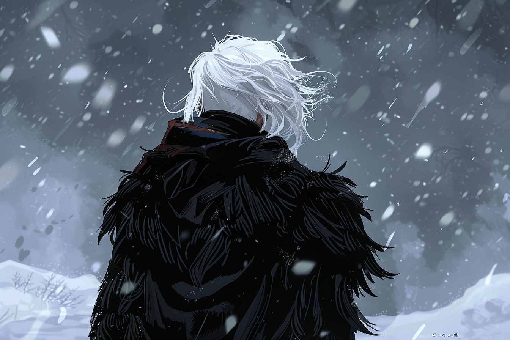

Meluan AdevarThe world felt the imbalance that the birth of that creature created on a cold and stormy night. The name began to resonate in whispers, always accompanied by the one who gave it life: Minerva, a powerful witch from the elite of the Zenith. She had rubbed shoulders with the Triad, they said, and it was rumored that her sharp tongue and knowledge of witchcraft were catapulting her to higher and higher vaults within the pyramid of the Dark Empire. When the Land of Dawns captured her during a battle and condemned her to the stake, the flames of this burned more intensely than in any other witch execution ever witnessed. But the name of her son was lost along with her influence. Born with all the tools to be a monster, he ended up being little more than a rat in the underworld of the Ebony Crown, hiding both his name and his magic to avoid being a puppet of the Triad. He did his job so well that, at the age of fifteen, he had already forgotten what magic was and how it felt to run through his veins. With his peculiar character, a duality between laughter and melancholy, and his ability to be a prodigy in every trade that the dark alleys demanded, he earned the nickname "The Kingdom's Fortune" in the lower spheres, loaded with irony. However, the wheel of destiny, always relentless, turned as it always did. During his tumultuous adolescence and those years of success, his name and his prodigious skills reached less scrupulous ears, attracting the attention of those who longed to use him in the darkest ways that the common mind could conceive. Thus, Meluan disappeared into the shadows for years. His name slowly faded from the streets, a shadow dissipating over time. Several years had passed, and his name began to roam the streets once more. Only this time, it was the streets of the Land of Dawns. Minerva's son, the Kingdom's Fortune. They said his presence wandered again, but not with good fortune; rather, his person had been contaminated by some dark curse. His eyes, now devoid of life and soul, seemed silent witnesses to some dark pact. His once radiant blonde mane lost its shine to acquire a sickly, snowy tone. His body was marked by intricate tattoos, imbued with runic ink that deprived him of his latent magic, while his hands were permanently stained a deep black. But something lurked in his mind: something hidden behind his gaze. Something dark, mysterious, and dangerous. |
||||||||||||||||
| Personality |
|---|
|

After his mysterious disappearance, Meluan emerged as a figure devoid of emotions, like a specter walking among the shadows. The loneliness he experienced during the years of hiding left a deep mark on his being, transforming him into an apparently insensitive and disconnected individual. Apathy has taken over his being, and the connection with his own humanity seems to have faded away. His actions and decisions are cold and calculated, as if he were stripped of any trace of feeling. The magic, which was once an intrinsic part of his being, has become a mere shadow of what it was, and the dark curse that haunts him has left its mark on the inability to experience the emotions that once defined him. |
| Background |
|---|
|
|